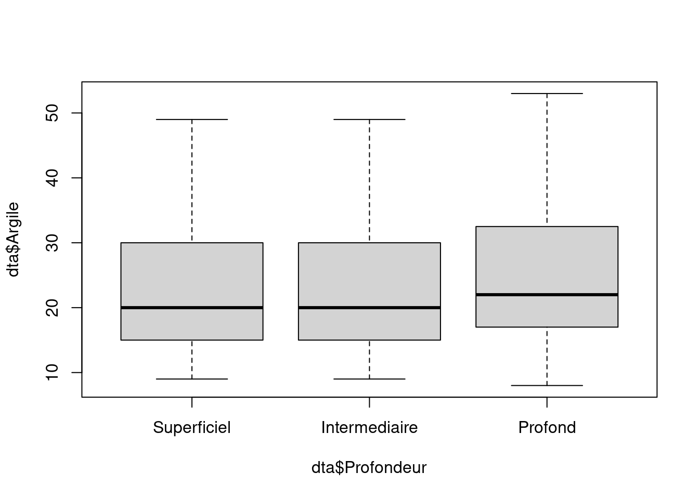
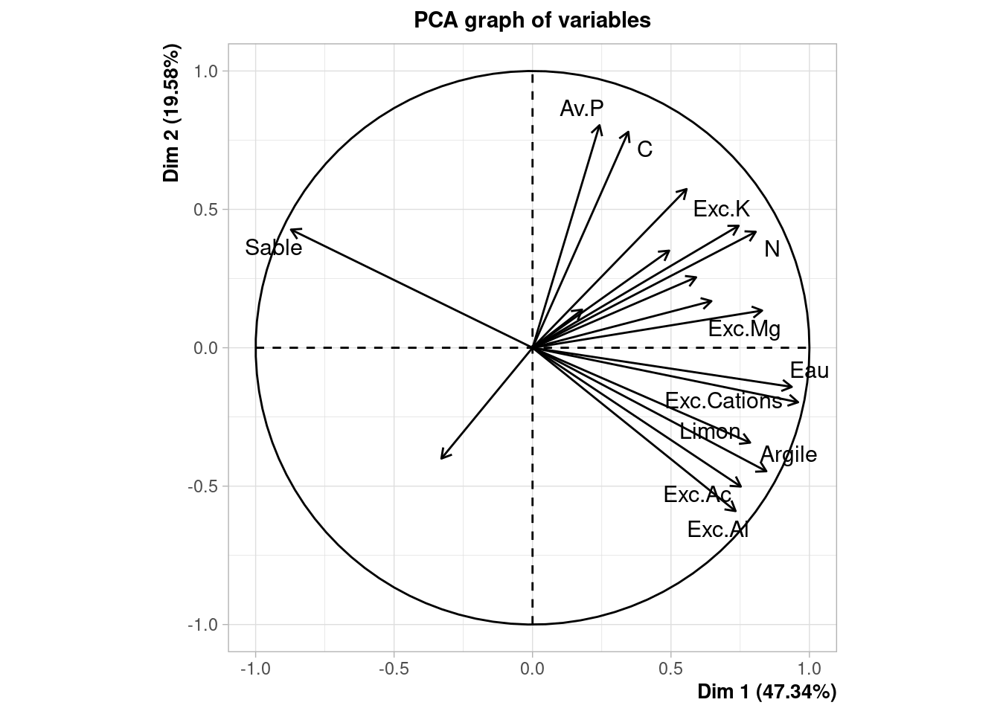

Code
knitr::opts_chunk$set(echo = TRUE, comment = NA,
cache = TRUE, message = FALSE,
warning = FALSE, eval = TRUE,
fig.align = "center")knitr::opts_chunk$set(echo = TRUE, comment = NA,
cache = TRUE, message = FALSE,
warning = FALSE, eval = TRUE,
fig.align = "center")Quarto permet de faire des rapports intégrant du code R, des sorties exécutées à partir de ce code et du texte présentant les analyses.
Ce document est rédigé avec quarto, le fichier source est disponible sur ce lien
Les données portent sur des échantillons de sols en différents sites, à différentes profondeurs en forêt de Bornéo. Diférentes variables de composition sont renseignées pour chaque échantillon, ainsi que le type de sol et la profondeur (par classe de profondeur).
On souhaite visualiser les relations entre les variables et identifier une typologie des sols.
library(tidyverse)
library(FactoMineR)Pour ajouter un chunk R CTL + Alt + i
dta <- read.table(file = "https://marieetienne.github.io/datasets/donnees_sols.txt", sep = ";", header = TRUE)# str(dta)
dta <- dta %>% mutate(Sol = as.factor(Sol),
Site = as.factor(Site),
Profondeur = factor(Profondeur), levels(c('Superficiel', 'Intermediaire', 'Profond'))) %>%
mutate(Profondeur = relevel(Profondeur, ref= "Superficiel"))
summary(dta) Sol Site Profondeur pH
Alluvial:180 292-11_A: 3 Superficiel :179 Min. :3.400
Dunaire :180 292-11_B: 3 Intermediaire:180 1st Qu.:4.400
Grès :179 292-11_H: 3 Profond :180 Median :4.670
292-11_M: 3 Mean :4.632
292-11_N: 3 3rd Qu.:4.880
292-11_O: 3 Max. :5.700
(Other) :521
Eau Av.P C N
Min. :0.170 Min. : 0.380 Min. :0.1400 Min. :0.01000
1st Qu.:1.540 1st Qu.: 1.940 1st Qu.:0.5200 1st Qu.:0.05000
Median :2.490 Median : 3.160 Median :0.8000 Median :0.07000
Mean :2.698 Mean : 4.132 Mean :0.9706 Mean :0.08056
3rd Qu.:3.740 3rd Qu.: 5.235 3rd Qu.:1.2800 3rd Qu.:0.10000
Max. :8.110 Max. :51.290 Max. :5.5900 Max. :0.31000
NO3 NH4 Exc.Ac Exc.Al
Min. : 0.000 Min. : 0.000 Min. : 0.250 Min. :0.030
1st Qu.: 0.400 1st Qu.: 1.655 1st Qu.: 1.990 1st Qu.:1.370
Median : 1.510 Median : 3.190 Median : 3.420 Median :2.720
Mean : 2.722 Mean : 5.044 Mean : 3.781 Mean :3.151
3rd Qu.: 2.965 3rd Qu.: 6.920 3rd Qu.: 5.205 3rd Qu.:4.475
Max. :23.600 Max. :40.430 Max. :10.570 Max. :9.720
Exc.Ca Exc.Mg Exc.K Exc.Na
Min. : 0.0000 Min. :0.0000 Min. :0.0000 Min. :0.00000
1st Qu.: 0.0400 1st Qu.:0.0700 1st Qu.:0.0500 1st Qu.:0.03000
Median : 0.0800 Median :0.2100 Median :0.1100 Median :0.05000
Mean : 0.3029 Mean :0.6194 Mean :0.1386 Mean :0.05237
3rd Qu.: 0.1900 3rd Qu.:0.8200 3rd Qu.:0.1700 3rd Qu.:0.07000
Max. :13.4900 Max. :5.3300 Max. :1.3000 Max. :0.27000
Exc.Cations SatBase Argile Limon
Min. : 0.380 Min. : 1.80 Min. : 8.00 Min. : 0.00
1st Qu.: 2.405 1st Qu.: 7.95 1st Qu.:16.00 1st Qu.:10.00
Median : 4.030 Median :13.24 Median :21.00 Median :13.00
Mean : 4.895 Mean :18.51 Mean :23.76 Mean :16.13
3rd Qu.: 6.765 3rd Qu.:24.67 3rd Qu.:32.00 3rd Qu.:21.50
Max. :17.300 Max. :97.54 Max. :53.00 Max. :47.00
Sable
Min. :15.0
1st Qu.:47.0
Median :67.0
Mean :60.1
3rd Qu.:74.0
Max. :87.0
nobs <- nrow(dta)
p <- ncol(dta)
any(is.na(dta))[1] FALSEsummary(dta$Profondeur) Superficiel Intermediaire Profond
179 180 180 Le fichier de données a 539 lignes et 21colonnes.
il n’y a pas de données manquantes
dta %>%
ggplot() +
aes(x= Profondeur, y = Argile) +
geom_boxplot() +
xlab('Classe de Profondeur')
boxplot(dta$Argile~ dta$Profondeur)
La somme des variables Limon, Argile et Sable devrait sommer à 100, mais ce n’est pas le cas à cause des erreurs d’arrondi
dta %>%
mutate(Total = Limon + Argile + Sable) %>%
select(Total) Total
1 100
2 100
3 99
4 100
5 100
6 100
7 100
8 100
9 100
10 100
11 100
12 101
13 100
14 100
15 100
16 100
17 100
18 100
19 100
20 99
21 100
22 99
23 100
24 100
25 100
26 99
27 100
28 99
29 100
30 101
31 100
32 100
33 100
34 100
35 100
36 99
37 100
38 100
39 100
40 100
41 101
42 100
43 101
44 100
45 101
46 100
47 100
48 100
49 100
50 100
51 100
52 100
53 100
54 99
55 100
56 101
57 100
58 101
59 101
60 100
61 101
62 101
63 101
64 101
65 100
66 99
67 100
68 100
69 101
70 100
71 100
72 100
73 100
74 100
75 100
76 100
77 100
78 100
79 100
80 100
81 100
82 100
83 101
84 99
85 101
86 100
87 100
88 100
89 101
90 100
91 101
92 99
93 100
94 100
95 100
96 100
97 100
98 100
99 100
100 100
101 100
102 100
103 99
104 100
105 99
106 100
107 99
108 100
109 99
110 100
111 99
112 100
113 100
114 100
115 100
116 100
117 100
118 100
119 99
120 100
121 100
122 100
123 100
124 99
125 99
126 100
127 100
128 100
129 99
130 101
131 99
132 100
133 100
134 100
135 100
136 99
137 100
138 100
139 101
140 100
141 100
142 99
143 100
144 99
145 101
146 99
147 100
148 100
149 100
150 99
151 100
152 99
153 100
154 100
155 100
156 100
157 100
158 100
159 99
160 100
161 99
162 100
163 101
164 100
165 100
166 99
167 100
168 101
169 100
170 101
171 100
172 99
173 100
174 101
175 100
176 101
177 100
178 100
179 100
180 100
181 100
182 100
183 100
184 99
185 100
186 100
187 100
188 100
189 100
190 99
191 100
192 101
193 100
194 101
195 99
196 100
197 99
198 100
199 101
200 100
201 100
202 99
203 100
204 100
205 99
206 100
207 101
208 100
209 101
210 100
211 100
212 100
213 99
214 100
215 99
216 100
217 100
218 100
219 100
220 100
221 100
222 100
223 100
224 100
225 100
226 100
227 100
228 100
229 101
230 100
231 100
232 100
233 100
234 100
235 100
236 100
237 100
238 100
239 100
240 100
241 100
242 100
243 101
244 100
245 101
246 100
247 100
248 100
249 100
250 100
251 100
252 100
253 100
254 100
255 100
256 100
257 100
258 100
259 100
260 100
261 99
262 100
263 99
264 100
265 100
266 100
267 99
268 100
269 99
270 100
271 100
272 100
273 100
274 100
275 100
276 100
277 99
278 100
279 100
280 100
281 100
282 100
283 100
284 100
285 100
286 99
287 100
288 100
289 100
290 100
291 99
292 100
293 99
294 101
295 100
296 101
297 100
298 100
299 100
300 101
301 100
302 101
303 100
304 100
305 100
306 100
307 101
308 100
309 100
310 100
311 100
312 100
313 101
314 100
315 101
316 100
317 101
318 100
319 100
320 100
321 100
322 100
323 100
324 100
325 100
326 100
327 100
328 100
329 100
330 100
331 100
332 100
333 99
334 100
335 99
336 100
337 101
338 100
339 100
340 100
341 100
342 100
343 100
344 100
345 100
346 100
347 100
348 100
349 100
350 100
351 101
352 100
353 101
354 100
355 100
356 100
357 100
358 100
359 100
360 100
361 100
362 100
363 100
364 101
365 100
366 100
367 101
368 100
369 100
370 100
371 100
372 99
373 100
374 99
375 100
376 100
377 100
378 101
379 100
380 101
381 100
382 100
383 100
384 99
385 99
386 99
387 100
388 100
389 100
390 100
391 100
392 100
393 100
394 100
395 100
396 100
397 100
398 100
399 100
400 100
401 100
402 100
403 100
404 100
405 100
406 100
407 100
408 99
409 100
410 99
411 100
412 99
413 100
414 100
415 100
416 100
417 100
418 101
419 100
420 100
421 100
422 100
423 100
424 100
425 100
426 100
427 100
428 100
429 100
430 100
431 100
432 100
433 100
434 100
435 100
436 100
437 100
438 100
439 100
440 100
441 100
442 100
443 100
444 100
445 101
446 100
447 100
448 100
449 100
450 101
451 100
452 101
453 99
454 100
455 99
456 100
457 100
458 100
459 101
460 100
461 101
462 100
463 100
464 100
465 101
466 100
467 101
468 100
469 100
470 100
471 100
472 100
473 100
474 101
475 100
476 101
477 100
478 101
479 100
480 100
481 100
482 100
483 100
484 100
485 100
486 100
487 100
488 100
489 99
490 99
491 99
492 100
493 101
494 100
495 99
496 100
497 99
498 100
499 100
500 100
501 100
502 100
503 100
504 100
505 100
506 100
507 100
508 101
509 100
510 100
511 100
512 100
513 99
514 101
515 99
516 100
517 101
518 100
519 100
520 100
521 100
522 99
523 100
524 99
525 100
526 100
527 100
528 100
529 101
530 100
531 101
532 100
533 101
534 100
535 100
536 100
537 99
538 100
539 99On peut s’interesser aux corrélations entre les variables
Pour visualiser les données on peut commencer par une ACP
X <- dta %>%
select(where(is.numeric)) %>% as.matrix()
dim(X)[1] 539 18On va prendre les mêmes poids pour tous les individus soit \(1/n\).
Les poids sont stockés dans la matrice \(W\)
On commence par une distance euclidienne. La matrice de distance \(M\) est l’identité
Le cours dit
l’inertie vaut \(tr(X^\top W X M)\)
On va chercher les valeurs et vecteurs propres de la matrice \(X^\top W X M\)
Si on fait une ACP non normée le sable et SatBase contribuent beaucoup plus à la formation des axes que les autres variables.
dta_pca <- PCA(X = dta, scale.unit = FALSE, quali.sup = c(1,2,3), ncp = 18)
#library(Factoshiny)Pour rééquilibrer le poids des variables dans la construction des projections, on propose une ACP normée.
Pour voir comment l’information d’une variable se disperse sur les différentes dimensions on peut regarder la contribution de cette variable à la construction des différents axes.
Par exemple pour le PH
round(dta_pca$var$contrib[1,],2) Dim.1 Dim.2 Dim.3 Dim.4 Dim.5 Dim.6 Dim.7 Dim.8 Dim.9 Dim.10 Dim.11
0.00 0.00 0.02 0.00 0.21 0.25 0.91 0.11 1.13 2.78 26.47
Dim.12 Dim.13 Dim.14 Dim.15 Dim.16 Dim.17 Dim.18
0.31 57.55 10.24 0.02 0.00 0.00 0.00 On peut mettre en place une ACP normée en précisant simple scale.unit = TRUE, ce qui est le comportement par défaut de la fonction `PC̀A ̀.
dta_pca <- PCA(X = dta, scale.unit = TRUE, quali.sup = c(1,2,3), ncp = 18)
#library(Factoshiny)Qualité globale des représentations
sur le plan 1-2 : on représente 66.9241274
sur le plan 1-3 : on représente 57.5578374
Avec 3 axes on représente 77.1397764 de l’inertie.
On peut visualiser le cercle des corrélations
plot.PCA(dta_pca,choix='var',
select='cos2 0.7',
unselect=0)
A l’aide des contributions des différentes variables à la définition des axes, on peut comprendre l’information résumée par ces axes.
dta_pca$var$contrib |> as.data.frame() |> arrange(-Dim.1) |> select(Dim.1) Dim.1
Exc.Cations 10.7948976
Eau 10.2869537
Sable 8.9320337
Argile 8.3692915
Exc.Mg 8.0680012
N 7.6257192
Limon 7.2482479
Exc.Ac 6.6410790
Exc.K 6.5019985
Exc.Al 6.3103633
NO3 4.8972792
Exc.Na 4.0962613
SatBase 3.6327958
Exc.Ca 2.8569555
C 1.4042632
pH 1.2715181
Av.P 0.6866580
NH4 0.3756832dta_pca$var$contrib |> as.data.frame() |> arrange(-Dim.2)|> select(Dim.2) Dim.2
Av.P 18.3416002
C 17.2698714
Exc.Al 9.8791351
SatBase 9.3284152
Exc.Ac 7.1350777
Argile 5.6487034
Exc.K 5.5144861
Sable 5.1690662
N 4.9797246
pH 4.5458035
Exc.Ca 3.4929128
Limon 3.3331633
Exc.Na 1.8388125
Exc.Cations 1.0983771
NO3 0.8067869
Eau 0.5672494
NH4 0.5379330
Exc.Mg 0.5128816dta_pca$var$contrib |> as.data.frame() |> arrange(-Dim.4) |> select(Dim.4) Dim.4
NH4 83.32422550
Av.P 5.07745293
Exc.Ca 4.76531991
pH 3.47674191
Exc.K 1.04204242
Exc.Ac 0.54618975
NO3 0.49368347
Limon 0.22554066
Eau 0.22252392
Exc.Al 0.22067882
C 0.20730224
N 0.19798282
SatBase 0.10528835
Exc.Mg 0.03464235
Sable 0.02775744
Exc.Cations 0.01430037
Argile 0.01058951
Exc.Na 0.00773764La description des axes * l’axe 1 parle de l’eau, des cations, du sable et de l’argile (et du limon) * l’axe 2 du phosphate et du carbone * petite remarque sur l’axe 4 qui est essentiellemnt NH4
dta_pca$var$contrib |> as.data.frame() |> arrange(-Dim.1) Dim.1 Dim.2 Dim.3 Dim.4 Dim.5
Exc.Cations 10.7948976 1.0983771 0.03480337 0.01430037 4.188057e-01
Eau 10.2869537 0.5672494 1.31525251 0.22252392 1.241612e-03
Sable 8.9320337 5.1690662 1.34016866 0.02775744 1.475239e-01
Argile 8.3692915 5.6487034 0.66996148 0.01058951 1.847004e-04
Exc.Mg 8.0680012 0.5128816 4.45586244 0.03464235 8.364634e+00
N 7.6257192 4.9797246 0.01069421 0.19798282 9.445310e+00
Limon 7.2482479 3.3331633 2.05875433 0.22554066 7.133881e-01
Exc.Ac 6.6410790 7.1350777 8.16655281 0.54618975 4.761044e-02
Exc.K 6.5019985 5.5144861 0.32713861 1.04204242 7.144207e+00
Exc.Al 6.3103633 9.8791351 4.68272487 0.22067882 1.511215e-01
NO3 4.8972792 0.8067869 4.89089787 0.49368347 3.091713e+01
Exc.Na 4.0962613 1.8388125 8.24800274 0.00773764 2.455226e+01
SatBase 3.6327958 9.3284152 11.55924831 0.10528835 6.504494e+00
Exc.Ca 2.8569555 3.4929128 20.07792776 4.76531991 4.503104e-01
C 1.4042632 17.2698714 3.73651595 0.20730224 4.190173e+00
pH 1.2715181 4.5458035 21.62566216 3.47674191 6.850679e+00
Av.P 0.6866580 18.3416002 1.63149855 5.07745293 5.566443e-02
NH4 0.3756832 0.5379330 5.16833338 83.32422550 4.526169e-02
Dim.6 Dim.7 Dim.8 Dim.9 Dim.10
Exc.Cations 2.48494588 2.638659e-02 1.717896e-02 3.46887901 0.81909567
Eau 1.51858452 1.697208e+00 2.648458e+00 0.54809897 0.05804883
Sable 0.33697321 5.287402e-04 4.659028e-02 4.05712341 1.02529020
Argile 0.04353745 3.812684e-01 1.129776e-02 7.22184556 0.87015577
Exc.Mg 4.25793987 3.735044e+00 1.127911e+01 0.63724057 12.11220034
N 0.65672497 5.566787e+00 6.368322e+00 0.89720121 4.15863023
Limon 0.83311347 6.416099e-01 1.053778e-01 57.82600449 10.98536861
Exc.Ac 0.18507327 2.356086e-01 1.488297e-02 2.57408705 0.54611503
Exc.K 5.01659624 7.486751e+00 1.469425e+00 2.64378882 2.72585996
Exc.Al 0.02060726 1.597977e-01 5.753269e-04 2.56353316 0.21734094
NO3 27.46088797 5.130396e+00 3.428301e-01 2.00631146 12.53278132
Exc.Na 7.15656695 2.682374e+01 1.837668e+01 1.37994935 5.84463872
SatBase 0.89194522 1.251606e+00 9.536667e+00 0.29851968 2.85607098
Exc.Ca 7.45715705 1.482961e+01 6.664628e+00 9.27175715 20.94267392
C 10.61725847 6.385827e+00 1.311118e+01 3.66149337 1.35319338
pH 11.22388389 2.112981e+01 2.328795e+01 0.03387108 0.27866698
Av.P 16.00085911 4.473410e+00 8.920512e-01 0.70452160 22.42340546
NH4 3.83734520 4.460218e-02 5.826795e+00 0.20577409 0.25046365
Dim.11 Dim.12 Dim.13 Dim.14 Dim.15
Exc.Cations 0.475351285 6.790340716 4.689912e-04 4.19063317 0.38072817
Eau 1.030075448 2.669876322 8.381966e-01 66.57685395 9.89523952
Sable 0.001653793 10.720691455 1.904331e+00 0.22389600 2.23094321
Argile 0.620111480 40.350300972 6.603893e+00 0.86902584 6.36143392
Exc.Mg 1.952950466 11.389774790 2.535660e+01 1.31465142 0.47047378
N 0.011537034 7.881749297 6.640709e-01 13.14907175 37.96982697
Limon 0.713985584 0.935792111 4.431672e-02 0.01823522 0.01585300
Exc.Ac 1.245609966 3.762674392 6.177288e+00 4.18254684 1.59099171
Exc.K 59.705766646 0.002482866 2.518258e-01 0.01370607 0.04066413
Exc.Al 0.653348920 1.472006310 6.624515e+00 6.61560972 0.14611545
NO3 0.382084218 7.263458776 1.678187e-02 0.87045319 1.95128298
Exc.Na 0.203088210 0.104957676 9.538177e-01 0.29523508 0.09727814
SatBase 4.210287564 3.441187546 4.495045e+01 0.29848568 1.13056013
Exc.Ca 0.437616155 0.745454395 1.234203e+00 0.70536231 0.10403308
C 0.005393352 0.363276426 4.330111e-03 0.17196912 36.76815480
pH 1.318673838 1.987303729 1.761950e+00 0.42029513 0.70634400
Av.P 26.896860661 0.068062495 2.554336e+00 0.06118856 0.04188870
NH4 0.135605378 0.050609727 5.862521e-02 0.02278094 0.09818830
Dim.16 Dim.17 Dim.18
Exc.Cations 9.561988769 2.326666e-03 5.942049e+01
Eau 0.126115816 8.562839e-06 1.501108e-05
Sable 0.081242444 6.375406e+01 1.220896e-04
Argile 0.040458768 2.192791e+01 2.731744e-05
Exc.Mg 1.137262735 6.966794e-04 4.920035e+00
N 0.415523180 1.120508e-03 3.939651e-06
Limon 0.001099745 1.430012e+01 2.721474e-05
Exc.Ac 26.458425159 3.746262e-03 3.048644e+01
Exc.K 0.008574133 3.151276e-04 1.043719e-01
Exc.Al 60.275930843 6.586284e-03 9.523289e-06
NO3 0.036851528 9.848034e-05 8.950844e-07
Exc.Na 0.013736881 1.187195e-04 7.115574e-03
SatBase 0.003903661 6.784058e-05 9.750597e-06
Exc.Ca 0.902323662 4.275538e-04 5.061325e+00
C 0.747672338 2.121981e-03 5.206150e-08
pH 0.080776017 6.806645e-05 1.052186e-07
Av.P 0.090348837 1.920379e-04 1.558006e-06
NH4 0.017765483 5.781532e-06 2.779483e-06dta_pca$var$contrib |> as.data.frame() |> arrange(-Dim.2) |> select(Dim.2) Dim.2
Av.P 18.3416002
C 17.2698714
Exc.Al 9.8791351
SatBase 9.3284152
Exc.Ac 7.1350777
Argile 5.6487034
Exc.K 5.5144861
Sable 5.1690662
N 4.9797246
pH 4.5458035
Exc.Ca 3.4929128
Limon 3.3331633
Exc.Na 1.8388125
Exc.Cations 1.0983771
NO3 0.8067869
Eau 0.5672494
NH4 0.5379330
Exc.Mg 0.5128816plot.PCA(dta_pca, axes=c(1,4),invisible=c('quali','ind.sup'),habillage=1,label ='none')
plot.PCA(dta_pca,choix='var',
select='cos2 0.7', ## pour représenter seulement les variables dont le cos2 > 0.7
unselect=0, axes = c(1,4) )
il fallait chercher l’axe 4 pour bien illustrer les différences entre grès et dunaire, l’axe 4 est presque exclusivement l’information sur le NH4.